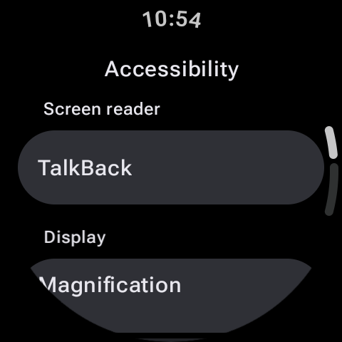

Smartwatches are designed to bring information closer to us, making technology seamless and convenient. However, small circular screens, tiny text options, and quiet speakers can make default setups difficult to navigate for users with visual, auditory, or motor impairments. Fortunately, Google's Wear OS contains a rich suite of built-in accessibility features that level the playing field, making smartwatches accessible and comfortable for everyone.
Whether you're setting up a watch for a family member or looking to make your own device easier to read and control, this guide breaks down the core Wear OS accessibility tools and how to configure them.

Visual Enhancements: Reading Small Screens with Ease
For users with low vision or general eye strain, the default layout of a Wear OS watch face can feel cramped. Here are the tools to improve visual clarity:
1. Screen Magnification
Magnification gestures allow you to zoom in on any screen. Once enabled, you can zoom in by triple-tapping the display. Drag two fingers across the screen to navigate the zoomed view, and triple-tap again to return to normal scale. This is highly useful for reading small notifications or entering PIN codes.
2. TalkBack (Screen Reader)
TalkBack is Wear OS's native screen reader. When active, it provides spoken feedback for every action. Tapping an item reads its title aloud, and double-tapping activates it. You can adjust the speech rate and volume settings to suit your comfort level.
3. Font Size and High Contrast Text
Under display settings, you can adjust global font sizes. Wear OS also includes a High Contrast Text mode, which outlines white text in black (or vice versa) to make it stand out against colorful backgrounds.
Setting Up the Triple-Press Shortcut
Navigate to Settings > Accessibility > Advanced settings. You can bind accessibility actions (like TalkBack or Magnification) to a triple-press of your physical Home button. This allows you to toggle the accessibility feature on or off in a split second.
Auditory Options: Clearer Sound Profiles
Wear OS supports several sound adjustments for individuals with hearing impairments, allowing them to communicate and receive alerts without strain.
- Mono Audio: By default, earphones or watch speakers may output audio in stereo channels. If you have single-sided hearing loss, you can enable Mono Audio to combine the left and right audio channels, ensuring you hear all sounds in both ears.
- Audio Balance Slider: Adjust the balance of audio output to direct more volume toward your left or right ear as needed.
- Real-time Text (RTT): If you use your watch to take calls, RTT allows you to communicate via text input during active voice calls.
Motor and Interaction Settings: Alternative Controls
Precise taps on a tiny 1.4-inch display can be difficult. Wear OS provides alternative interaction controls to mitigate this:
| Feature | How it Works | Target Audience |
|---|---|---|
| Touch and Hold Delay | Adjusts the duration required for the watch to register a long-press. | Users who find long-pressing too sensitive or slow. |
| Time to Take Action | Keeps temporary alert banners (like new texts) on screen for longer periods. | Users who need more time to read notifications before they slide away. |
| Gestures | Allows wrist-flicks to scroll through cards or shake-gestures to go back. | Hands-free control or users with limited finger dexterity. |
How to Access Accessibility Settings
Configuring these tools is simple. Follow these steps on your watch:
- Swipe down to open Quick Settings and tap the Settings (Gear) icon.
- Scroll down and select Accessibility.
- Select the category you wish to edit: Visual, Hearing, or Interaction.
- Toggle on the required features and customize their parameters.
Alternatively, you can open the companion app on your phone, navigate to Watch Settings > Accessibility, and configure them there.
Conclusion
Accessibility is not an afterthought; it is a fundamental pillar of Wear OS design. By taking advantage of features like magnification gestures, TalkBack, and custom touch delays, users can tailor their smartwatch interfaces to fit their individual needs. Spend some time customizing these settings today to create a smooth, comfortable wearable experience!